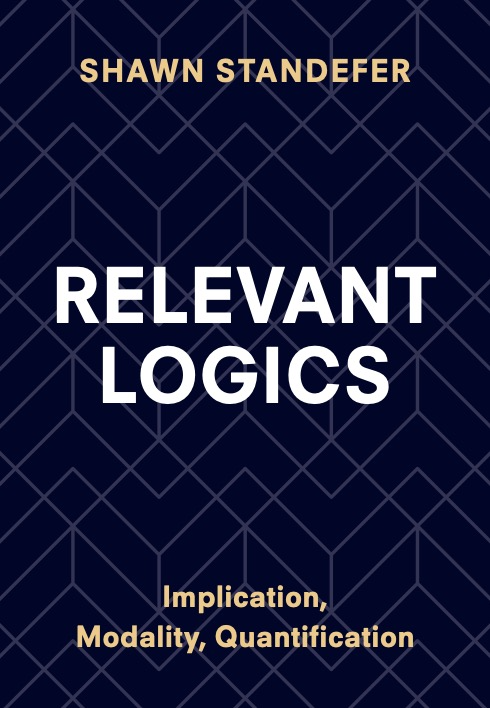
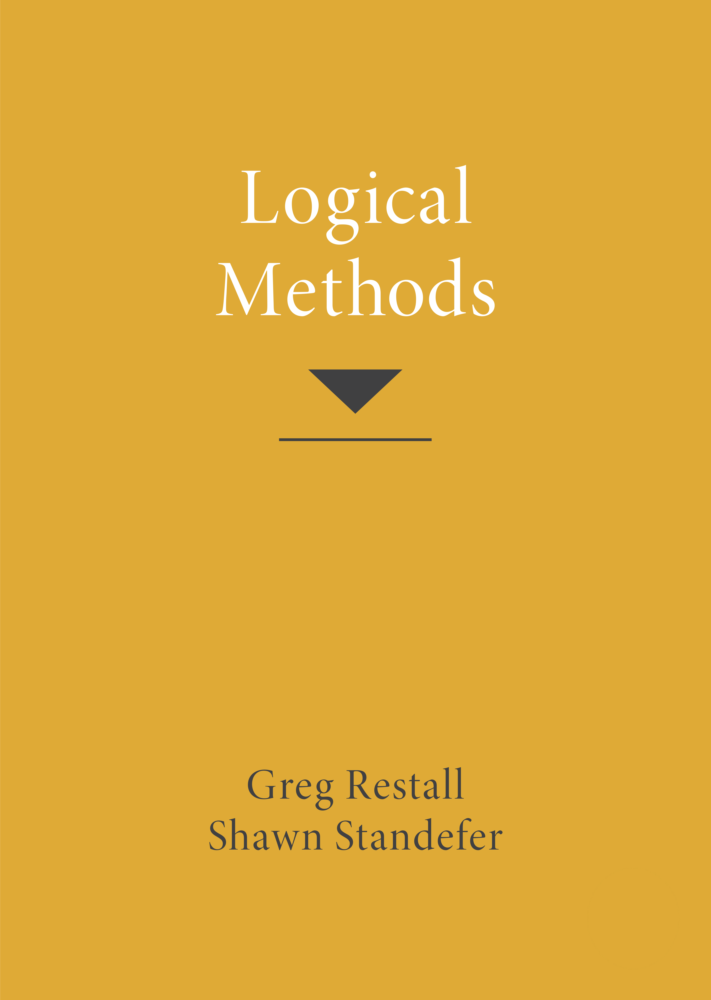

 I am an Assistant Professor in the Department of Philosophy and Religious Studies at North Carolina State University. I was previously an Assistant Professor in the Department of Philosophy at National Taiwan University, and before that I was a Postdoctoral Research Fellow on the ARC project Meaning in Action at the University of Melbourne working with Greg Restall. I completed my PhD in Philosophy at the University of Pittsburgh, supervised by Anil Gupta.
My primary research is in Philosophical Logic, with a focus on relevant logics, proof theory, and paradoxes. In 2024, I was awarded the Ta-You Wu Memorial Award by the National Science and Technology Council of Taiwan in recongition of my research achievements. This is the most prestigious national award for early career researchers in Taiwan.
A list of my publications with abstracts and pdfs can be found on my Research page.
You can view my CV here.
My book Relevant Logics: Implication, Modality, Quantification is forthcoming with Cambrdige University Press.
With Greg Restall, I co-authored Logical Methods, an intermediate philosophical logic textbook.
You can view my PhilPapers page here. I am editor for the categories Revision Theory of Truth and Proof Theory.
I am the managing editor at the Australasian Journal of Logic.
I am co-president of the Australasian Assocation for Logic with Guillermo Badia for 2023-2024. I was co-president for 2021-2022 and 2022-2023 as well.
From 2015 to 2021, I organized the Melbourne Logic Seminar. I was a co-organizer of the Logic Supergroup, from 2020 to 2022.
 0000-0002-3032-5290
0000-0002-3032-5290